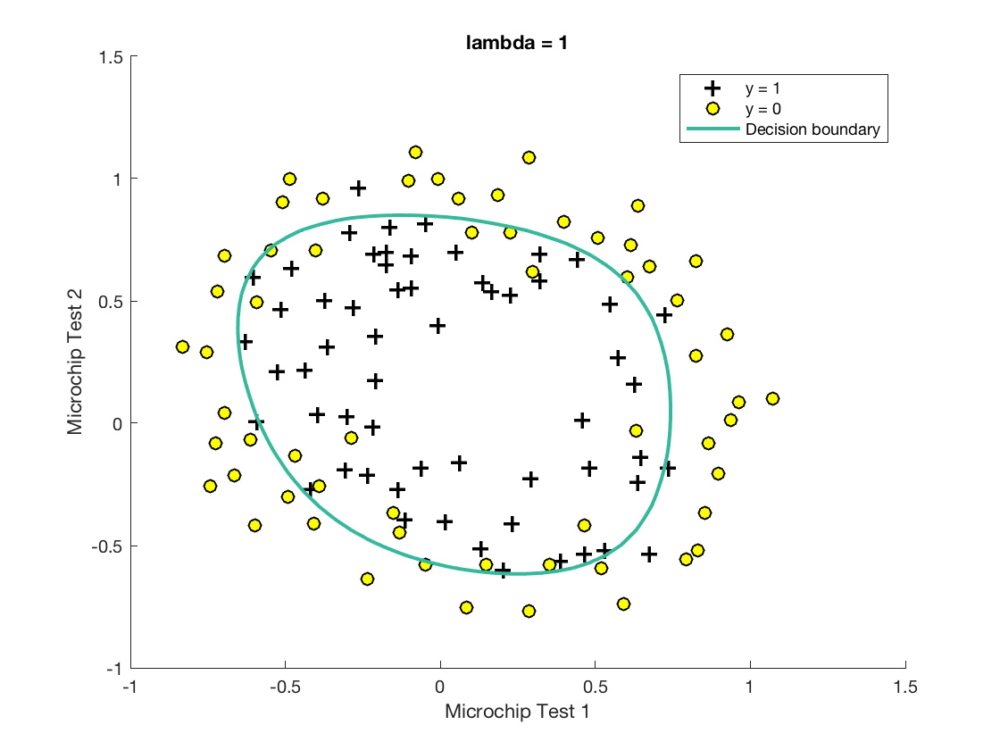
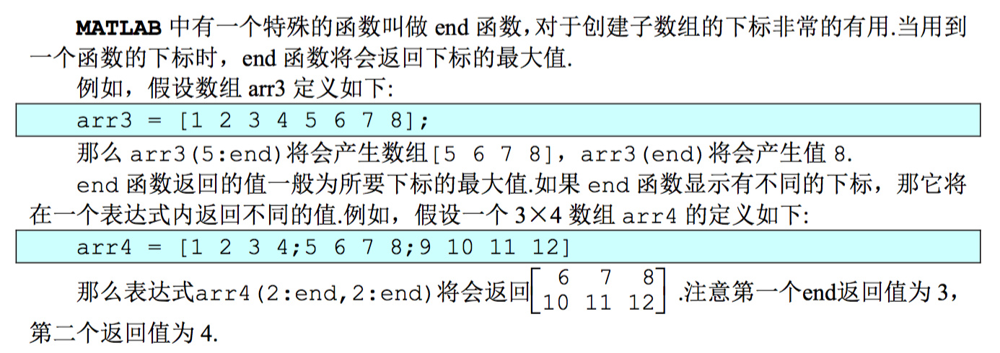
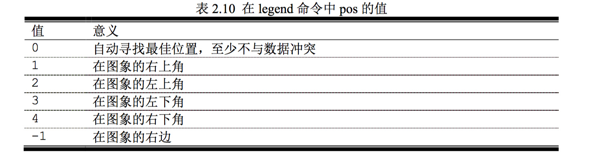
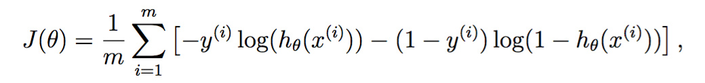
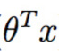
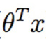
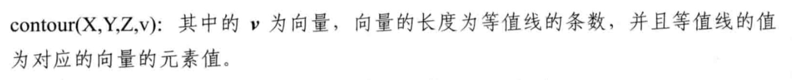
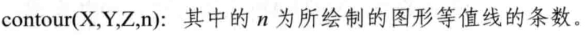

斯坦福cs229 MATLAB公开课，简称ML公开课。这是第二次编程练习，本次重点是无约束非线性规划函数fminunc的用法，以及一些作图的技巧。
简介
实现逻辑斯谛回归，并应用到给定的两个数据集上。


逻辑斯谛回归
根据两门考试的成绩预测学生是否能够录取：
- 34.62365962451697,78.0246928153624,0
- 30.28671076822607,43.89499752400101,0
- 35.84740876993872,72.90219802708364,0
- 60.18259938620976,86.30855209546826,1
- 79.0327360507101,75.3443764369103,1
加载：
- %% Load Data
- % The first two columns contains the exam scores and the third column
- % contains the label.
- data = load('ex2data1.txt');
- X = data(:, [1, 2]); y = data(:, 3);
可视化数据
- %% ==================== Part 1: Plotting ====================
- % We start the exercise by first plotting the data to understand the
- % the problem we are working with.
- fprintf(['Plotting data with + indicating (y = 1) examples and o ' ...
- 'indicating (y = 0) examples.\n']);
- plotData(X, y);
- % Put some labels
- hold on;
- % Labels and Legend
- xlabel('Exam 1 score')
- ylabel('Exam 2 score')
- % Specified in plot order
- legend('Admitted', 'Not admitted')
- hold off;
matlab中的…就是个连接符，有些行太长了，用…分割一下。
plotData具体实现：
- function plotData(X, y)
- %PLOTDATA Plots the data points X and y into a new figure
- % PLOTDATA(x,y) plots the data points with + for the positive examples
- % and o for the negative examples. X is assumed to be a Mx2 matrix.
- % Create New Figure
- figure; hold on;
- % ====================== YOUR CODE HERE ======================
- % Instructions: Plot the positive and negative examples on a
- % 2D plot, using the option 'k+' for the positive
- % examples and 'ko' for the negative examples.
- %
- % Find Indices of Positive and Negative Examples
- pos = find(y==1); neg = find(y == 0);
- % Plot Examples
- plot(X(pos, 1), X(pos, 2), 'k+','LineWidth', 2, ...
- 'MarkerSize', 7);
- plot(X(neg, 1), X(neg, 2), 'ko', 'MarkerFaceColor', 'y', ...
- 'MarkerSize', 7);
find函数返回满足条件的下标，plot一共两次，与legend两次对应。
legend制作图例
- legend('string1','string2',...,pos)
不传位置参数表示自动寻找合适位置放置图例：

得到：

可以直观地看出数据大致是线性可分的，可以预计逻辑斯谛回归模型适用于该数据。
实现sigmoid函数
逻辑斯谛回归模型的假设函数为：

其中g为sigmoid函数：

实现如下：
- function g = sigmoid(z)
- %SIGMOID Compute sigmoid functoon
- % J = SIGMOID(z) computes the sigmoid of z.
- % You need to return the following variables correctly
- g = zeros(size(z));
- % ====================== YOUR CODE HERE ======================
- % Instructions: Compute the sigmoid of each value of z (z can be a matrix,
- % vector or scalar).
- g = 1 ./ (1 + exp(-z));
- % =============================================================
- end
注意./为element-wise除法。
损失函数和梯度
损失函数为假设函数h在整个训练集上的对数似然函数的相反数：

其导数为

被实现为costFunction，这个名字取得不太好，明明干了两件事情的：
- function [J, grad] = costFunction(theta, X, y)
- %COSTFUNCTION Compute cost and gradient for logistic regression
- % J = COSTFUNCTION(theta, X, y) computes the cost of using theta as the
- % parameter for logistic regression and the gradient of the cost
- % w.r.t. to the parameters.
- % Initialize some useful values
- m = length(y); % number of training examples
- % You need to return the following variables correctly
- J = 0;
- grad = zeros(size(theta));
- % ====================== YOUR CODE HERE ======================
- % Instructions: Compute the cost of a particular choice of theta.
- % You should set J to the cost.
- % Compute the partial derivatives and set grad to the partial
- % derivatives of the cost w.r.t. each parameter in theta
- %
- % Note: grad should have the same dimensions as theta
- %
- J = 1 / m * [- y' * log(sigmoid(X * theta)) - (1 - y') * log(1 - sigmoid(X * theta))];
- grad = 1 / m * X' * (sigmoid(X * theta) - y);
- % =============================================================
- end
得到损失函数J的值——一个标量，和梯度向量。
调用方法如下：
- %% ============ Part 2: Compute Cost and Gradient ============
- % In this part of the exercise, you will implement the cost and gradient
- % for logistic regression. You neeed to complete the code in
- % costFunction.m
- % Setup the data matrix appropriately, and add ones for the intercept term
- [m, n] = size(X);
- % Add intercept term to x and X_test
- X = [ones(m, 1) X];
- % Initialize fitting parameters
- initial_theta = zeros(n + 1, 1);
- % Compute and display initial cost and gradient
- [cost, grad] = costFunction(initial_theta, X, y);
- fprintf('Cost at initial theta (zeros): %f\n', cost);
- fprintf('Gradient at initial theta (zeros): \n');
- fprintf(' %f \n', grad);
- fprintf('\nProgram paused. Press enter to continue.\n');
- pause;
学习参数
用到了无约束非线性规划函数优化方法fminunc，基本用法是：

更多信息详见附录。
调用方法
- %% ============= Part 3: Optimizing using fminunc =============
- % In this exercise, you will use a built-in function (fminunc) to find the
- % optimal parameters theta.
- % Set options for fminunc
- options = optimset('GradObj', 'on', 'MaxIter', 400);
- % Run fminunc to obtain the optimal theta
- % This function will return theta and the cost
- [theta, cost] = ...
- fminunc(@(t)(costFunction(t, X, y)), initial_theta, options);
- % Print theta to screen
- fprintf('Cost at theta found by fminunc: %f\n', cost);
- fprintf('theta: \n');
- fprintf(' %f \n', theta);
- % Plot Boundary
- plotDecisionBoundary(theta, X, y);
- % Put some labels
- hold on;
- % Labels and Legend
- xlabel('Exam 1 score')
- ylabel('Exam 2 score')
- % Specified in plot order
- legend('Admitted', 'Not admitted')
- hold off;
- fprintf('\nProgram paused. Press enter to continue.\n');
- pause;
这里还有个绘制决策边界的函数：
- function plotDecisionBoundary(theta, X, y)
- %PLOTDECISIONBOUNDARY Plots the data points X and y into a new figure with
- %the decision boundary defined by theta
- % PLOTDECISIONBOUNDARY(theta, X,y) plots the data points with + for the
- % positive examples and o for the negative examples. X is assumed to be
- % a either
- % 1) Mx3 matrix, where the first column is an all-ones column for the
- % intercept.
- % 2) MxN, N>3 matrix, where the first column is all-ones
- % Plot Data
- plotData(X(:,2:3), y);
- hold on
- if size(X, 2) <= 3
- % Only need 2 points to define a line, so choose two endpoints
- plot_x = [min(X(:,2))-2, max(X(:,2))+2];
- % Calculate the decision boundary line
- plot_y = (-1./theta(3)).*(theta(2).*plot_x + theta(1));
- % Plot, and adjust axes for better viewing
- plot(plot_x, plot_y)
- % Legend, specific for the exercise
- legend('Admitted', 'Not admitted', 'Decision Boundary')
- axis([30, 100, 30, 100])
- else
- % Here is the grid range
- u = linspace(-1, 1.5, 50);
- v = linspace(-1, 1.5, 50);
- z = zeros(length(u), length(v));
- % Evaluate z = theta*x over the grid
- for i = 1:length(u)
- for j = 1:length(v)
- z(i,j) = mapFeature(u(i), v(j))*theta;
- end
- end
- z = z'; % important to transpose z before calling contour
- % Plot z = 0
- % Notice you need to specify the range [0, 0]
- contour(u, v, z, [0, 0], 'LineWidth', 2)
- end
- hold off
- end
如果数据特征维度小于等于2的话（代码中是3，因为第一列实际上都是1，是为了bias准备的），直接画到平面上去，取两点plot直线。
预测与评估
有了参数，给定输入，传进假设函数，得到几率，根据几率是否大于0.5做出预测。
- function p = predict(theta, X)
- %PREDICT Predict whether the label is 0 or 1 using learned logistic
- %regression parameters theta
- % p = PREDICT(theta, X) computes the predictions for X using a
- % threshold at 0.5 (i.e., if sigmoid(theta'*x) >= 0.5, predict 1)
- m = size(X, 1); % Number of training examples
- % You need to return the following variables correctly
- p = zeros(m, 1);
- % ====================== YOUR CODE HERE ======================
- % Instructions: Complete the following code to make predictions using
- % your learned logistic regression parameters.
- % You should set p to a vector of 0's and 1's
- %
- prob = sigmoid(X * theta);
- for i = 1 : m
- if prob(i) >= 0.5
- p(i) = 1;
- else
- p(i) = 0;
- end
- end
- % =========================================================================
- end
有了预测函数，可以在训练集上跑一下评估：
- %% ============== Part 4: Predict and Accuracies ==============
- % After learning the parameters, you'll like to use it to predict the outcomes
- % on unseen data. In this part, you will use the logistic regression model
- % to predict the probability that a student with score 45 on exam 1 and
- % score 85 on exam 2 will be admitted.
- %
- % Furthermore, you will compute the training and test set accuracies of
- % our model.
- %
- % Your task is to complete the code in predict.m
- % Predict probability for a student with score 45 on exam 1
- % and score 85 on exam 2
- prob = sigmoid([1 45 85] * theta);
- fprintf(['For a student with scores 45 and 85, we predict an admission ' ...
- 'probability of %f\n\n'], prob);
- % Compute accuracy on our training set
- p = predict(theta, X);
- fprintf('Train Accuracy: %f\n', mean(double(p == y)) * 100);
- fprintf('\nProgram paused. Press enter to continue.\n');
- pause;
p == y得到布尔向量，转为双精度求均值得到accuracy。
正则化逻辑斯谛回归
这部分利用正则化逻辑斯谛回归，根据某芯片的两个参数预测其是否合格。
- 0.051267,0.69956,1
- -0.092742,0.68494,1
- -0.21371,0.69225,1
- -0.375,0.50219,1
- -0.51325,0.46564,1
数据可视化
- %% Load Data
- % The first two columns contains the X values and the third column
- % contains the label (y).
- data = load('ex2data2.txt');
- X = data(:, [1, 2]); y = data(:, 3);
- plotData(X, y);
- % Put some labels
- hold on;
- % Labels and Legend
- xlabel('Microchip Test 1')
- ylabel('Microchip Test 2')
- % Specified in plot order
- legend('y = 1', 'y = 0')
- hold off;
代码跟上一章一模一样，得到：

这次的数据明显不是线性可分的，尝试加入更多特征。特征越多，线性可分的可能性越高。没有额外特征？那就把已有特征取个n次方映射为新特征，创造条件也要上。
如果最高六次方的话，则为：

其实现如下：
- function out = mapFeature(X1, X2)
- % MAPFEATURE Feature mapping function to polynomial features
- %
- % MAPFEATURE(X1, X2) maps the two input features
- % to quadratic features used in the regularization exercise.
- %
- % Returns a new feature array with more features, comprising of
- % X1, X2, X1.^2, X2.^2, X1*X2, X1*X2.^2, etc..
- %
- % Inputs X1, X2 must be the same size
- %
- degree = 6;
- out = ones(size(X1(:,1)));
- for i = 1:degree
- for j = 0:i
- out(:, end+1) = (X1.^(i-j)).*(X2.^j);
- end
- end
- end
下标中的end用法如下：
这边被用作了append操作。
损失函数和梯度
损失函数多了个L2正则化项：

作为bias的 不应参与正则化项，所以上式j从1开始，matlab中下标从2开始。
不应参与正则化项，所以上式j从1开始，matlab中下标从2开始。
梯度如下：

实现如下：
- function [J, grad] = costFunctionReg(theta, X, y, lambda)
- %COSTFUNCTIONREG Compute cost and gradient for logistic regression with regularization
- % J = COSTFUNCTIONREG(theta, X, y, lambda) computes the cost of using
- % theta as the parameter for regularized logistic regression and the
- % gradient of the cost w.r.t. to the parameters.
- % Initialize some useful values
- m = length(y); % number of training examples
- % You need to return the following variables correctly
- J = 0;
- grad = zeros(size(theta));
- % ====================== YOUR CODE HERE ======================
- % Instructions: Compute the cost of a particular choice of theta.
- % You should set J to the cost.
- % Compute the partial derivatives and set grad to the partial
- % derivatives of the cost w.r.t. each parameter in theta
- J = 1 / m * [- y' * log(sigmoid(X * theta)) ...
- - (1 - y') * log(1 - sigmoid(X * theta))] ...
- + lambda / 2 / m * (theta' * theta - theta(1) * theta(1));
- grad = 1 / m * X' * (sigmoid(X * theta) - y) ...
- + lambda / m * theta;
- grad(1) = grad(1) - lambda / m * theta(1);
- % =============================================================
- end
在这份实现中，先忽略 的特殊性，一股脑地算出来，然后将
的特殊性，一股脑地算出来，然后将 的梯度额外减去正则化项。
的梯度额外减去正则化项。
学习参数
无约束最小化，跟上一章一摸一样：
- %% ============= Part 2: Regularization and Accuracies =============
- % Optional Exercise:
- % In this part, you will get to try different values of lambda and
- % see how regularization affects the decision coundart
- %
- % Try the following values of lambda (0, 1, 10, 100).
- %
- % How does the decision boundary change when you vary lambda? How does
- % the training set accuracy vary?
- %
- % Initialize fitting parameters
- initial_theta = zeros(size(X, 2), 1);
- % Set regularization parameter lambda to 1 (you should vary this)
- lambda = 1;
- % Set Options
- options = optimset('GradObj', 'on', 'MaxIter', 400);
- % Optimize
- [theta, J, exit_flag] = ...
- fminunc(@(t)(costFunctionReg(t, X, y, lambda)), initial_theta, options);
- % Plot Boundary
- plotDecisionBoundary(theta, X, y);
- hold on;
- title(sprintf('lambda = %g', lambda))
- % Labels and Legend
- xlabel('Microchip Test 1')
- ylabel('Microchip Test 2')
- legend('y = 1', 'y = 0', 'Decision boundary')
- hold off;
- % Compute accuracy on our training set
- p = predict(theta, X);
- fprintf('Train Accuracy: %f\n', mean(double(p == y)) * 100);
可视化决策边界
函数还是那个函数，只不过进入了第二个分支：
- % Here is the grid range
- u = linspace(-1, 1.5, 50);
- v = linspace(-1, 1.5, 50);
- z = zeros(length(u), length(v));
- % Evaluate z = theta*x over the grid
- for i = 1:length(u)
- for j = 1:length(v)
- z(i,j) = mapFeature(u(i), v(j))*theta;
- end
- end
- z = z'; % important to transpose z before calling contour
- % Plot z = 0
- % Notice you need to specify the range [0, 0]
- contour(u, v, z, [0, 0], 'LineWidth', 2)
这个作图很精妙，决策边界位于 中的等于0的时候，此时几率为0.5，是决策的临界点。所以先把一个区域内所有点的都算出来，但最后只画==0的那些，也就是用contour的[0, 0]参数来约束。
中的等于0的时候，此时几率为0.5，是决策的临界点。所以先把一个区域内所有点的都算出来，但最后只画==0的那些，也就是用contour的[0, 0]参数来约束。

我发现v向量最低长度得为2，不然就会被当做标量0处理，退化为：

结果一条线也看不到。
运行后得到图形：
通过修改λ的值，可以得到欠拟合和过拟合的图例：
欠拟合：
过拟合：
附录


最近也在学习 machine learning by andrew n.g 利用contour绘制边界函数plotDecisionBoundary一直没看太懂，看了女主的解释才搞明白，受教了